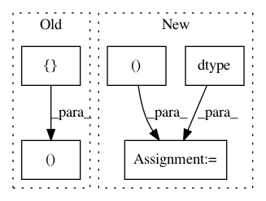

9408ebcb3f9ef1420640febf67b48c48fdcd2dd8,distributed/protocol/cupy.py,,serialize_cupy_ndarray,#Any#,40
Before Change
x = cupy.array(x, copy=True)
header = x.__cuda_array_interface__.copy()
return header, [x]
@cuda_deserialize.register(cupy.ndarray)
def deserialize_cupy_array(header, frames):
After Change
header = x.__cuda_array_interface__.copy()
header["strides"] = tuple(x.strides)
frames = [
cupy.ndarray(
shape=(x.nbytes,), dtype=cupy.dtype("u1"), memptr=x.data, strides=(1,)
)
]
return header, frames
In pattern: SUPERPATTERN
Frequency: 3
Non-data size: 5
Instances
Project Name: dask/distributed
Commit Name: 9408ebcb3f9ef1420640febf67b48c48fdcd2dd8
Time: 2020-02-16
Author: jakirkham@gmail.com
File Name: distributed/protocol/cupy.py
Class Name:
Method Name: serialize_cupy_ndarray
Project Name: dask/distributed
Commit Name: 9408ebcb3f9ef1420640febf67b48c48fdcd2dd8
Time: 2020-02-16
Author: jakirkham@gmail.com
File Name: distributed/protocol/numba.py
Class Name:
Method Name: serialize_numba_ndarray
Project Name: nipy/dipy
Commit Name: f35690b2e58c5ce301bcee8d4420177d9cb20a3a
Time: 2009-10-05
Author: matthew.brett@gmail.com
File Name: dipy/io/trackvis.py
Class Name:
Method Name: read